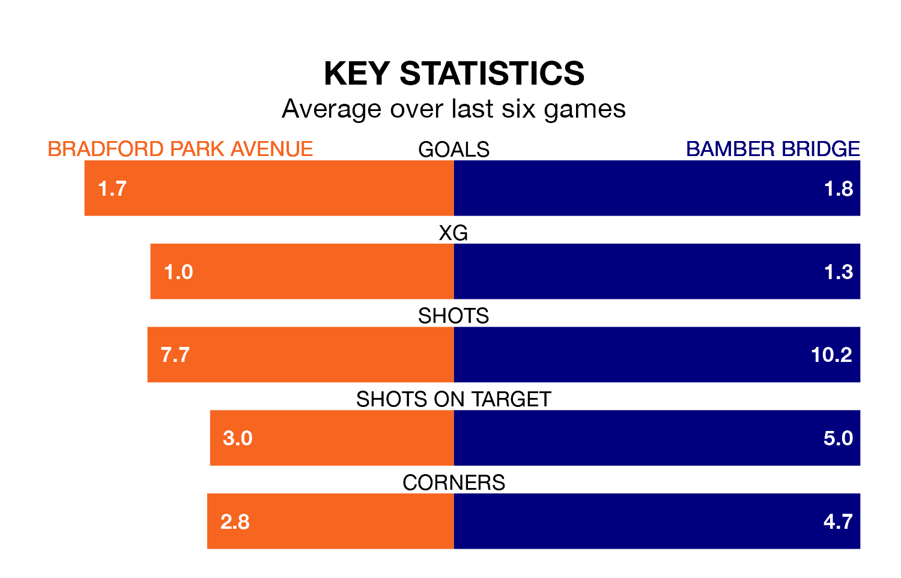

Bradford Park Avenue are on a poor run ahead of hosting Bamber Bridge at the Horsfall Stadium on Saturday, with just four points collected from their last six games.
Bradford Park Avenue have picked up one win and one draw in their last six Northern Premier League games, and face a Bamber Bridge side whose last six games have brought one win and three draws.
Bradford Park Avenue are 18th in the table after 20 games, of which they have won four and drawn five, earning 17 points.
Bamber Bridge are three places ahead of the home team in 15th, with five wins and 10 draws putting them on 25 points.
With 24 goals in 20 games so far this season, Bradford Park Avenue are scoring at below the league average rate with 1.2 goals per game. And they are conceding more than average, letting in 35 goals at a rate of 1.8 per game.
The visitors are also below average scorers, with 1.6 goals per game, compared to a league average of 1.7. They have conceded 1.7 goals per game.
Bradford Park Avenue's last match was on December 16, a 4-3 win against Macclesfield, with (two) getting the goals for Bradford Park Avenue.
Bamber Bridge beat Matlock Town 2-1 last time out, also on December 16, with on the scoresheet.
